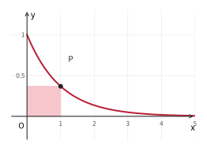

ホーム ＞ 数学III ＞ 微分法の応用
曲線 \(y=e^{-x}\ (x>0)\) 上の点 \(P\) から \(x\) 軸、\(y\) 軸に下ろした垂線と両軸が作る長方形の面積の最大値を求めよ。
点 \(P\) を \(x\) で表し、面積を \(x\) の関数にして微分。\(x>0\) の範囲で増減表。
\(P(x,\ e^{-x})\)。長方形 \(O,\ (x,0),\ P,\ (0,e^{-x})\) の面積：

\[S'(x)=(1-x)e^{-x}\]
\(x=1\) で増加から減少へ。
【答案（テストに書く形）】
答